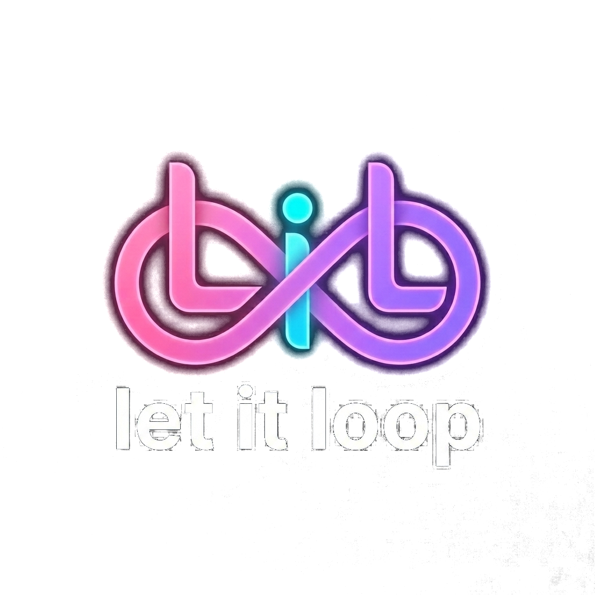
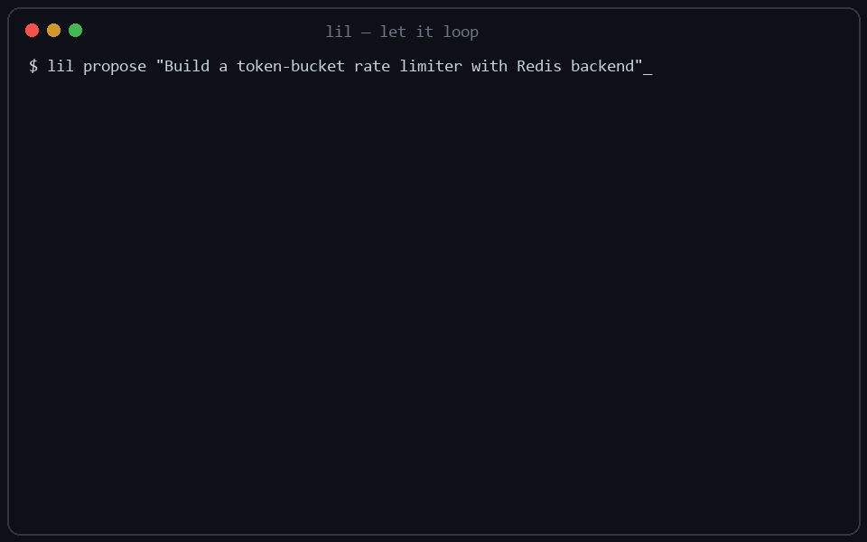

let it loopletitloop turns autonomous agents into accountable engineers: every task is a typed contract, every completion is a machine-verified proof, every run survives a crash.
Star on GitHub Get started
Objectives decompose into cryptographically scoped contracts with cycle detection, declared outputs, and explicit dependencies. No vibes, just structure.
AST syntax checks, command exit codes, regex matchers, scope fences, undeclared-output detection. Completion requires empirical proof, never a model's self-assessment.
Write-ahead logging with hash chains, atomic file locking, orphan-lease recovery. Kill the process mid-run; resume exactly where it stopped.
Three strikes with strategy mutation, then a formal impossibility proof instead of an infinite hallucination loop. Budget ceilings enforced.
Specialized correctness, security, docs, test, and architecture reviews with cross-model arbitration and QC overrule governance.
MIT licensed. Runs Ollama / vLLM with zero API keys, or plug in Claude, GPT, Gemini, and 10+ worker adapters. MCP server + client built in.
Python 3.11+. Cloud keys optional - fully local works out of the box.
pip install letitloopDescribe the objective. letitloop decomposes it into a verified contract DAG and asks for approval.
lil propose "Add rate limiting with tests" --runWatch every contract pass machine checks. Crash? Resume. Done? Read the evidence ledger.
lil supervise --goal my-goalUnlike chat-loop agents (OpenHands, AutoGPT) that trust the model's self-assessment, letitloop is an operating-system scheduler for agents: contracts in, proofs out, nothing ships unverified.
From JSON schemas to a Gemini CLI adapter - each scoped to a first PR under 200 lines. Pick one →
Legacy refactors, FastAPI CRUD factories, offline Ollama loops, multi-agent QC audits - copy-paste goal files included. Browse recipes →
Bring your own model, keep your code, own your audit trail. Open PRs →